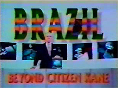

Documentário
Brazil: Beyond Citizen Kane
Documentário
Brazil: Beyond Citizen Kane
(assista aqui a montagem com as 4 partes do
video)
O documentário Brazil: Beyond Citizen Kane
foi produzido pelo Channel4, da BBC de Londres. Retrata
uma pequena parte da história da Rede Globo de Televisão
e da forma como a mesma manipula a opinião pública para obter vantagens
financeiras e políticas.
Hartog, que gozava de boa saúde, morreu em circunstâncias muito misteriosas e suspeitas poucos dias após a exibição do documentário para os telespectadores ingleses.

DOWNLOAD DO DOCUMENTÁRIO
O documentário Brazil Beyond Citizen Kane pode ser baixado aqui:
|
Opção 1: (RECOMENDADO) |
(RECOMENDADO) |
|
Opção 2: |
|
|
Video 3: Parte Única |
|
|
Opção 3: |
Veja também (video):
Globo faz lançamento publicitário da droga GHB